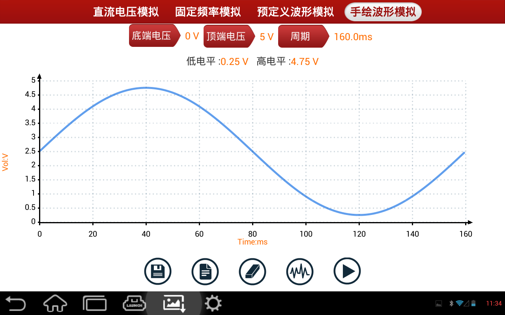
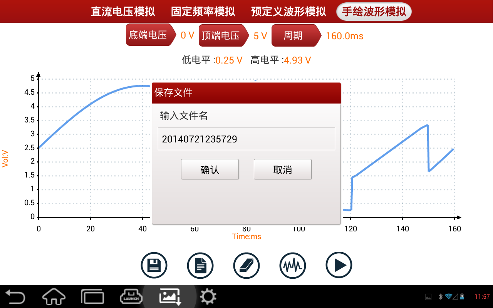
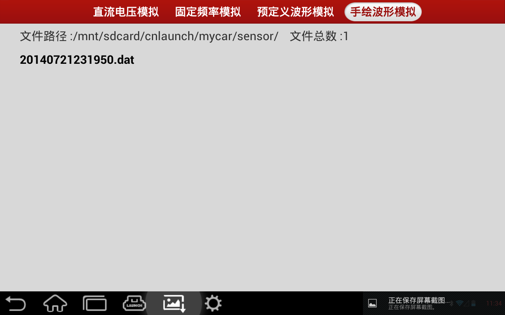

“手绘波形模拟”功能给用户模拟比较特殊的波形和故障波形时，带来了很大的方便，用户只要在网格上绘出所要模拟的波形形状，通过设置按钮中提供的参数设置设置好波形电平高低量程和周期，点击“开始”即可输出用户想要的波形。 用户还可以将所绘制波形和设置好的波形保存，可以调取原设置好的手绘波形模拟，网格上方文本显示当前波形的顶端电压和低端电压以及周期。如图所示
|  |
保存：点击该键，会弹出文件名输入窗口，提供对设置好的波形参数和图形进行保存；
|  |
加载：点击该键，会弹出文件选择框，选择以保存好的波形图形：
|  |
擦除：点击该键，擦除界面图形，恢复至初始数据。
选择波形：点击该键，弹出传感器选择和波形选择窗口中选择所要模拟的传感器类型和波形类型
开始（停止）：开始或停止手绘波形模拟输出。
注意：
绘制波形时绘出一个周期的完整波形即可（输出时，系统将绘制的波形当作一个周期），应在绘制区尽量大的绘出波形，这样系统采样的点更多，输出的波形与手绘的波形误差就越小。用户在此手绘的波形不必考虑高、低电平和周期，只考虑波形即可，高、低电平和周期可在设置参数中设置。